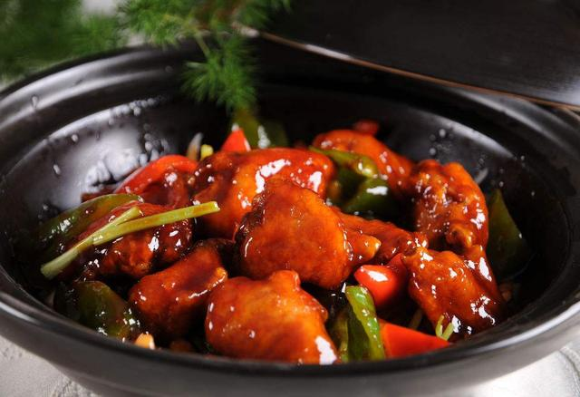

三杯雞
三杯雞原是江西寧都具有代表性的赣南客家傳统名菜，已有數百年的制作歷史。
其獨特之處在于：烹制時，把乾淨的雞斬成小塊，置于砂鍋中，不放湯水，只需配以一杯甜米酒、一杯油、一杯醬油同煨而成，故名"三杯雞"。
以其肉質酥嫩、原汁原味、浓香誘人、味道醇厚而聞名於世，後傳到台灣從而被廣泛認知，成為地道的台灣家常菜。
三杯中的油，正宗的台湾菜館更多的不是用沙拉油而是用葱爆香後的麻油來烹飪，
至於酒則可以因喜好來定奪，除了米酒以外，黄酒、葡萄酒甚至酒酿都是不錯的選擇。

滷肉飯
薑母鴨
花生豬腳
心得